Project Goal
My hope for this project is to gain more understanding on the relationship between different Tillage settings on a ripper tool and the resulting soil profile.
I want to see if I can predict the resulting soil roughness and soil surface residue based on tillage settings.
Objectives
-Find out if I can predict tillage metrics base on tillage tool configuration.
-Investigate what regression models would be best for the LiDAR data I have.
-Find out correlation between specific tillage settings and resulting soil measurement.
Workflow
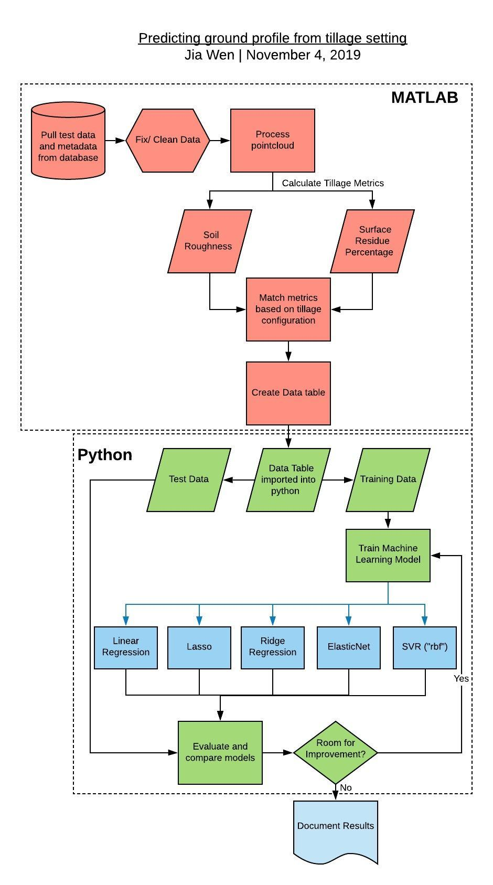
Background and measurement terms
Data was collected from a LiDAR mounted perpendicular to the ground on a tillage implement.
A point cloud of the soil surface after tillage is generated by taking scans when the tillage implement is pulled by the tractor as shown in the image below.
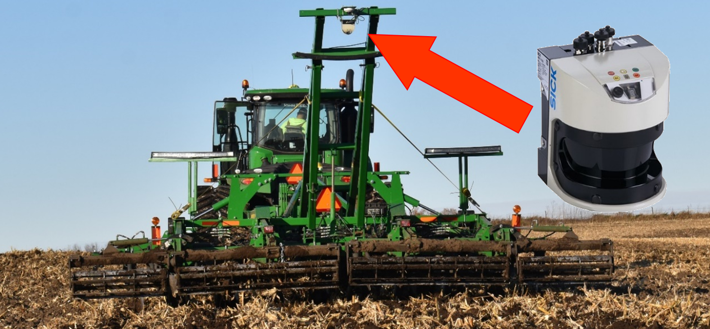
A good measurement of soil profile is important in developing a closed-loop control system for optimizing the tillage process.
How the field is tilled can affect erosion, fertilizer runoff, soil nutrient and soil structure of the field so it is important to be
able to measure and control the soil profile created from tillage.
Measured Metrics:
1) Soil roughness metric - A measure of how uneven or flat the soil surface is. Will be further explained in the data processing section.
2) Soil surface residue percentage - Percentage of soil covered by soil residue measured based on LiDAR RSSI
3) RSSI - Relative Signal Strength Index
4) Soil surface residue - Organic matter present on top of the soil. An example is circled in red in the image below

Factors:
1) disk_in - Depth set in inches of front disk on the tillage implement.
2) closingDisk - Depth set in inches of back disk on the tillage implement, -6 is out of the ground.
3) basket - True, false on whether or not basket was off the ground, 1 means baskets were off the bround and 0 means baskets were on the ground.
4) speed_mph - Forward velocity in mph.
Tillage implement segments
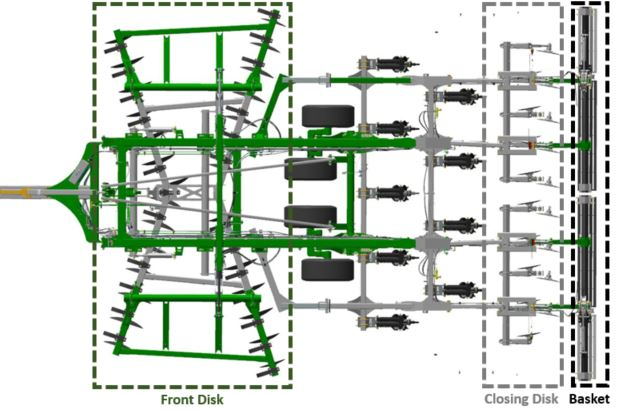
Data processing
Data processing was done in MATLAB. Data and exact steps to convert point cloud data into a roughness metric and surface residue percentage will not be provided
as there might be proprietary implecations with that. Another note is that currently not all data has been process so there are low resolution in some of the factors measured.
I will however give a brief overview of how metrics were obtained.
Roughness
Rougness is quantified by the root mean squared error calculated for
each individual scan. Mean of root mean sqaured error over 700 consecutive scans is then taken to obtain a roughness metric for a specific set of factors.
Surface Residue
Surface Residue quantified using k-mean clustering from a point cloud data set where both surface residue and soil were present.
A full write up of the clustering process can be found here.
resPercent represents the residue percentage estimate from a -1.5m to 1.5m scan width on the back of the tillage implement.
resPercentFull represents the residue percentage estimate from a -3.5m to 3.5m scan width which is the full width of the tillage implement.
Resulting data table can be found here.
Data was then passed into python for data analysis.
Statistical analysis
Full code here.
First we want to see what kind of correlation each factor has with roughness and surface residue. For this we use the .corr method from a pandas dataframe and make a heatmap of correlations
using seaborn. Correlation is done both with the default 'pearson' method as well as the 'spearman' method which is more robust in finding correlation if there is a possibility that relationship
is non-linear. Refer to this link for a more in depth explanation.
Pearson Heatmap
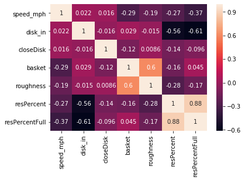
Spearman Heatmap
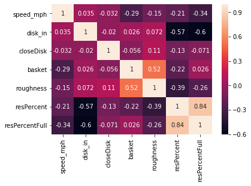
From the heat map, it can be seen that roughness is mostly correlated with basket and speed.
while full surface residue precentage is mostly correlated with front disk depth and speed.
Spearman heat map shows a potential correlation between closing disk and roughness.
Box plots are made to further visualize the relationship:
Boxplot of factors against roughness
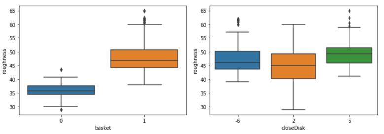
Box plot of roughness show a large step response between when the basket is up vs when basket is down, due to the boolean nature of the
factor, high correlation might just be due to the binary nature of the factor. Closing disk looks to have a non-linear relationship however more resolution
in the x-axis would help better confirm the relationship.
Boxplot of factors against surface residue percentage
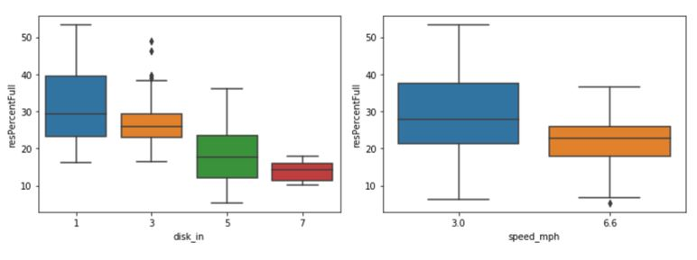
Box plot of residue shows a clear relationship between front disk depth and surface residue.
Median of surface residue percentage and variance of seem to decrease with speed
Regression models
Full code here.
5 regression models were used to try and create a predictive model for the data set for both roughness and surface residue percentage.
Linear models chosen for comparison were, Linear Regression
, Ridge Regression,
ElasticNet,
Lasso and
State Vector Regression.
Models were mainly chosen by following the regression branch on the scikit-learn algorithm cheat-sheet
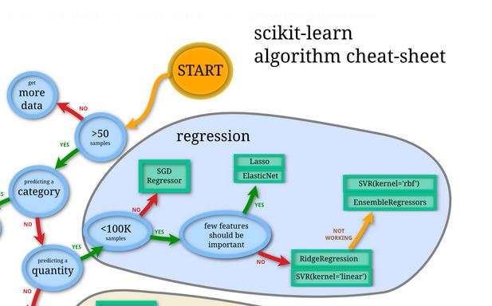
Linear Regression model provides a simple regression model which serve as a baseline comparison for all the other regression models. Lasso, Ridge Regression
and ElasticNet models all use a form of loss function and regularization.
Lasso uses L1 regularization; Ridge Regression uses L2 regularization while ElasticNet balaces between both L1 and L2 regularization.
More information on comparison between Linear, Ridge, Lasso and ElasticNet can be found here.
SVR with a rbf(radial basis function) kernel provides a non-linear model for the comparison.
Data set was split into training and test sets with a fixed random seed so that resulting metrics were comparable.
Factors were scaled so resulting coefficients for each factors were comparable.
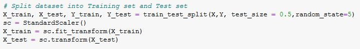
A function was written to take in data frame of factors and result to easily automate training and testing of all 5 models for different X and Y values. Models were use
to predict Y values of test data and model results were compare with RMSE and R2 metrics.
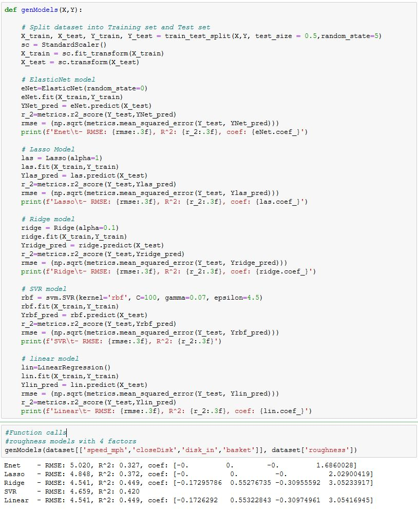
Result and discussion:
Function Execution
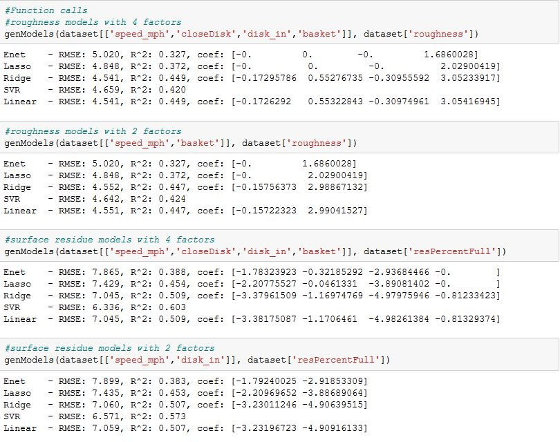
RMSE and R2 values from regression models for roughness
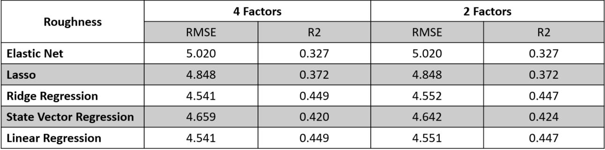
Table of RMSE and R2 of models for roughness shows that the ElasticNet and Lasso model performed the worst, followed by SVR. Ridge and the Linear Regression model
performed roughly the same. Result shows that there were no noticable difference between using 2 factors and using 4 factors. This suggests that relationship can be best
explain through a linear model and that main factors that affect roughness are speed of tillage and the use of baskets. Usage of L2 loss function performed better that algorithms
that utilised L1 loss function although a simple linear regression model performed just as well as the Ridge model meaning that any form of regularization is probably unneccesary.
RMSE and R2 values from regression models for surface residue
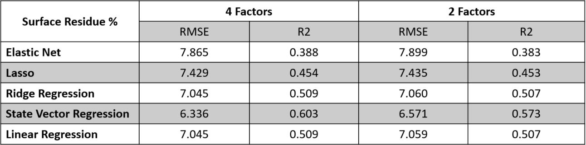
Concluding thoughts:
Table of RMSE and R2 of regression models for surface residue shows that once again ElasticNet model performed the worst follow by the Lasso, Ridge and the Linear model.
SVR performed really well for surface residue. Increasing the factors from 2 to 4 seems to slightly increase the R2 value of the SVR model. The fact that SVR with rbf kernel performs
better than the linear regression models shows that the relationship we have might be more non-linear than linear.
Overall, best models for roughness explain up to 45% of the variance which is satisfactory considering the larger amount of environmental factors that come into play in agriculture. Surface residue percentage
models performed quite well with the best R2 value of 60%. Project has helped me see which factors in tillage has the largest influece on resulting soil profile. Concepts used from the class includes all the data processing and visualization libraries to help make sense of the data including pandas, seaborn boxplot and heatmap
and getting correlations from all factor involved. This class has helped me better understand differences between machine learning models and most importantly where to find documentation to understand and use these models.
Moving forwards, I think data input used for these models can be improved as mentioned earlier, not all the data has been processed. More data points with higher resultion for closing disk and speed would help better define
relationships between these factors and resulting surface roughness and residue.
Guided task
A Guided task for regression models for the Lidar data set can be found here.